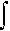

|
Введение
Движущиеся в проводнике электроны, несущие электрический заряд при приложении напряжения
занимают энергетические состояния в зоне проводимости (E > Ec). Статистика
подсчёта электронов зоны проводимости основана на следующих расчётах
количество электронов = (количество состояний) * (вероятность
занятия электроном состояния).
Количество энергетический состояний электрона на
единицу объёма на энергетическом интервале, E ~ E+dE,определяется как
количество состояний = g(E)dE.
Здесь g(E) называется плотностью состояний (ПС).
Затем,энергетическое состояние при энергии E имеет определённую вероятность быть занятым
электроном :
вероятность занятия = f(E).
Эта вероятность - главное заключениеe статистики
Ферми-Дирака, а f(E) называется функцией распределения Ферми.
Поэтому количество электронов на энергетиеском интервале, E ~ E+dE, находится как
количество электронов в интервале E ~ E+dE = (количество состояний)
* (вероятность занятия)
= g(E)dE * f(E)
Общее число электронов в зоне проводимости
находится так:
n = g(E)f(E)dE
до(??) E = Ec ~ +бесконечность.
Для дырок в валентной зоне (то есть,незанятых
состояний в ВЗ),
число дырок в интервале E ~ E+dE = (количество состояний) *
(вероятность вакансии)
= g(E)dE * [1-f(E)]
И общее число дырок,
p = g(E)[1-f(E)]dE
over(до - ??) E = -бесконечность ~ Ev.
Прочтите Математические
расчёты для более подробного изучения.
|